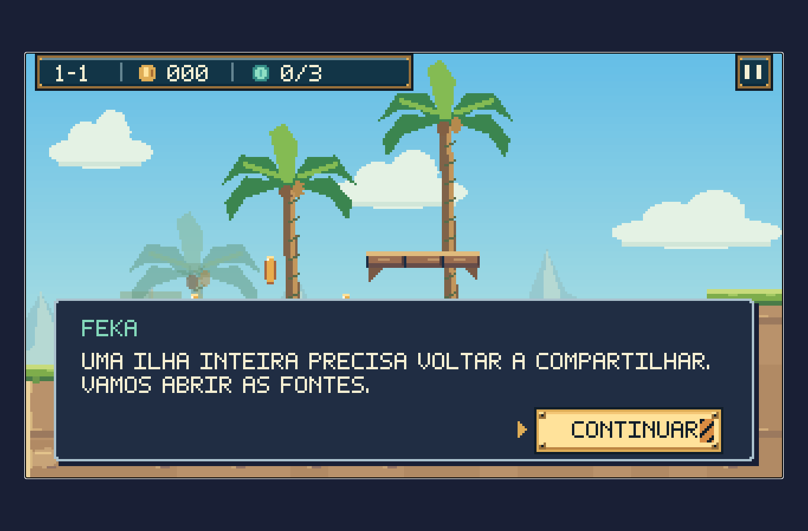
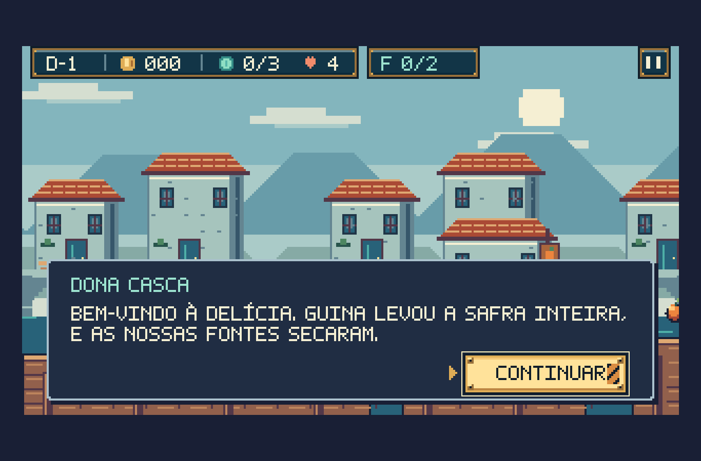

Nova revisão: cenários, materiais e animações — ver a revisão atual.
Cenários atualizados: ver a nova revisão dos fundos, vegetação e arquitetura, com antes e depois das 14 fases.
Revisão de 8 de outubro de 2026
Império da Delícia no World
A janela, o HUD, as conversas e os menus do capítulo agora usam a apresentação compartilhada da campanha. Abaixo estão capturas do jogo em execução, no mesmo tamanho de tela.

World · campanha
Império da Delícia · mesmo renderizador e componentesO que foi verificado
| Verificação | Resultado |
|---|
| Posição e tamanho da janela | Iguais ao World nos cinco tamanhos testados |
| Painel e botões da pausa | Comparação de pixels idêntica |
| Cabeçalho e volumes das opções | Comparação de pixels idêntica |
| Áudio, vozes e tremor | Preferências compartilhadas com a campanha |
| Entrar, jogar, pausar, sair e reentrar | Fluxos verificados sem erros no navegador |
1366 × 900; 1920 × 1080; 1536 × 864 com escala de 125%; celular em 390 × 844 e 844 × 390. O relatório completo reúne 60 capturas.
Chefes, conclusão e memórias
O polimento final corrigiu o recorte dos chefes na entrada da arena, a leitura dos avisos, a paginação das memórias e os símbolos do controle.
As imagens de chefes, conclusão e recuperação usam estados preparados para revisão visual. A travessia das fases e a possibilidade de vencer os dois chefes também são verificadas nos testes de simulação.
Telas pequenas